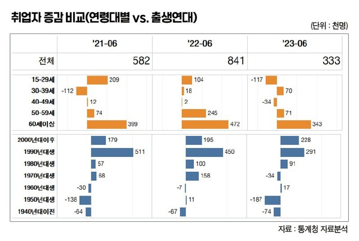
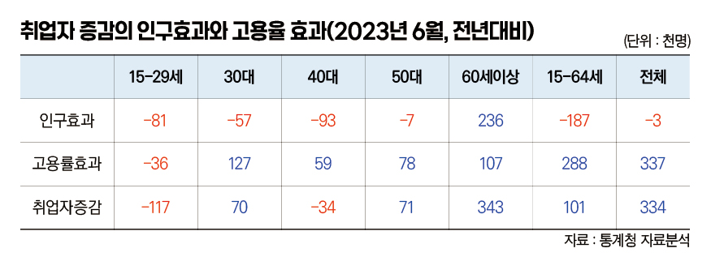

박영삼의 통계로 보는 노동
청년 고용률 하락과 ‘쉬었음’ 증가, 심상치 않다
6월 고용동향 15~29세 취업자 감소 … 인구 감소보다 고용률 하락 때문
지난주 통계청의 6월 고용동향이 발표됐다. 2023년 상반기까지의 고용상황이 집계된 것이고, 윤석열 정부 출범 이후 만 1년의 고용성적표가 공개된 것이다.
정부는 고용률이 역대 최고(63.5%)이며 취업자(+33만3천명)도 28개월 연속 증가세를 유지했다고 자평했다. 언론은 늘어난 취업자는 대부분 60대 이상 고령자(+34만3천명)이며 청년들의 경우 8개월째 취업자 감소가 이어지면서 6월에도 11만7천명 감소했다고 혹평했다. 정부는 이에 대해 지난해 청년 취업자가 많이 증가했던 기저효과(2022년 6월 +10만4천명)의 영향이 크고 청년의 인구감소(-17만2천명)를 고려해야 한다고 설명하고 있다.
급격한 인구구조 변화, 연령별 고용지표에 의문부호
고령자 중심의 취업자 증가 현상과 청년 취업자 감소 현상을 어떻게 봐야 할까. 고용동향이 발표될 때마다 60대 이상 고령자 중심의 취업자 증가라는 평가는 달라지지 않고 있다. 현 정부도 청년고용에 대해서 만큼은 전 정부의 설명을 따라서 인구감소 때문이라고 말하는데, 그것은 어느 정도 사실에 부합하는 것일까?
우선 우리나라의 연령별 인구구조는 굴곡이 매우 심하다. 10년 단위로 만 나이 연령대를 구분해서 취업자 증가 규모를 전년 동기와 비교하게 되면, 각 연령대의 취업자 규모 차이는 바로 앞 연령대의 ~9세 연령 취업자 규모의 영향을 그대로 받는다. 특히 60대와 20대의 경우에는 59세와 14세의 인구 숫자에 워낙 큰 차이가 있어서 더 큰 영향을 받는다. 매년 60대로 합류하게 되는 50대 후반 연령대의 평균 인구는 90만명 규모인 반면, 10대 초·중반 인구는 40만명 규모에 불과하기 때문이다.
그렇다면 출생년도를 기준으로 10년 단위 그룹을 나누면 어떻게 될까. 만 나이 변화에 따른 9세 효과는 사라지게 된다. 대신 사망인구가 점점 늘어나게 되는 1940년 이전 출생세대는 인구와 취업자가 계속 감소하게 되고, 매년 신규 인구가 유입되는 2000년 이후 출생그룹은 인구와 취업자가 계속 증가하게 된다.
청년 취업자 감소 ‘인구 요인 vs 고용률 요인’
통계청처럼 만 나이 기준 10년 구간을 설정하게 되면 증가한 취업자 대부분이 60대 이상으로 나온다. 2021년 이후 3년간 취업자 증가분의 68.6%, 56.1%, 103.0%를 60대 이상이 차지한다. 한편 출생연대별로 집단을 구분하면 앞서와 반대로 젊은층에 해당하는 1990년대생들이 2021년 이후 취업자 증가의 87.8%, 53.5%, 87.4%를 각각 점유한 것으로 나타난다. 전자의 방식은 연령대별 인구 분모의 변화를 제대로 반영하지 못하고 있고, 후자의 방식은 청년층과 노령층의 신규 진입과 퇴출을 고려하지 않은 맹점이 있다.

현재로서는 취업자 증가 요인을 인구증가에 의한 효과와 해당 인구의 고용률 증가에 따른 효과로 분해하는 방법이 있다. 인구효과는 고용률이 전년과 같다는 가정하에 인구변화에 따른 취업자수 증감 효과를 나타내고, 고용률 효과는 인구가 전년과 같다는 가정하에 고용률 변화에 따른 취업자수 변화를 나타낸다. 전체 취업자 증가는 인구효과와 고용률 효과의 합계로 나타난다. 인구효과를 주어진 변수로 간주한다면 고용률 효과에는 경기변동 영향과 정부정책 효과도 포함된다.
고용률 효과 마이너스, 15~29세가 유일
이 방법으로 6월 고용동향의 취업자 증감치를 요인분해하면 아래 표와 같다. 15~29세 청년층의 경우 –11만7천명의 취업자 감소 규모 중 –8만1천명은 지난해 고용률 수준에서 인구가 감소한 영향이다. –3만6천명의 추가적인 취업자 감소는 고용률이 –0.4%포인트 감소한 것에 따른 영향이다. 30대의 경우 인구감소 영향은 –5만7천명 정도 있었으나 고용률이 지난해보다 높아져 7만명의 취업자 증가를 나타낼 수 있었다. 40대는 인구감소 영향이 –9만3천명 있었으나 고용률 증가로 취업자 감소폭을 –3만4천명 정도로 줄일 수 있었다. 50대는 인구감소 영향이 미미하게 있었으나 고용률 증가 영향이 더 커서 취업자가 7만1천명증가했다. 한편 60대이상의 경우 인구증가 영향도 23만6천명 있었지만 고용률 상승 영향이 더 보태져 취업자는 34만3천명이나 증가했다. 이를 종합해 보면 60대 이상의 취업자 증가는 인구효과뿐만 아니라 고용률 효과가 더해진 것이며, 20대 이하 청년층의 고용감소는 인구감소 때문만이 아니라 고용률도 감소한 영향이 중첩된 것이다.

지금의 상황은 윤석열 정부 출범 이전과는 양상이 다르다. 코로나 위기 발발 이전에 20대 이하 청년들은 인구감소에도 6만명 이상의 취업자 증가를 보이고 있었다. 고용률이 증가하고 있었기 때문이다. 코로나 사태로 고용률이 급락한 때가 있었지만 2021년 4월부터는 다시 증가하기 시작했고 2022년 10월까지 무려 20개월 연속 증가세를 보였다. 이 시기에 청년층의 취업자 증가는 인구감소 영향을 넘어서는 고용률 증가로 가능했다.

계절조정 청년 고용률도 2021년 6월(44.6%)에 코로나 위기 이전 수준(2020년 1월, 44.4%)을 회복했고 2022년 5월에는 1999년 이후 계절조정치 기준 역대 최고치인 47.2%를 기록하게 된다. 이러던 청년고용이 마이너스 증가로 떨어진 것은 2022년 11월이었다. 그리고 지난달까지 8개월째 청년취업자 감소는 이어지고 있다. 감소 규모도 5만명 미만에서 이제는 10만명을 훨씬 넘고 있다. 인구감소 영향이 아니라 고용률 하락 때문이다.
한국에는 왜 ’장기실업=장기구직’이 없나
앞으로의 상황도 희망적이지 않다. 청년층의 공식실업률은 역대 최저(6.3%)이고 비경제활동인구 가운데 구직활동에 나설 가능성이 있는 최대치인 ’고용보조지표3’조차 17%로 역대 가장 낮은 수준이다. 청년들 가운데 지난주 구직활동을 하지 않고 ’쉬었음’이라고 답한 인구는 38만6천명으로 코로나 이전보다 많아졌다. 그 안에서 취업을 희망하는 잠재구직자는 7만8천명으로 줄었고 노동시장 사정이 나아지면 구직활동을 해 볼 수 있다고 생각하는 구직단념자(실망실업자)는 3만2천명에 불과했다. 이들 중에는 과거 직장에서 일한 적이 있는 사람이 절반 이상 포함돼 있는데도 그렇다. 직장의 규모는 대부분 30명 미만 사업장에 속했던 사람들이다.
한국에 장기 구직활동이 없는 것은 장기 실업급여가 없다는 말과 동의어다. 청년들은 실업급여를 받기도 어렵지만 받아도 5개월을 넘기 어렵다. 청년들이 왜 구직활동을 하지 않고 쉬고 있는지, 청년을 가장 많이 생각한다는 정부가 생각해 봐야 할 일이다.
고려대 노동문제연구소 노동데이터센터장 (youngsampk@gmail.com)